#Importing Libraries
pacman::p_load(tidyverse, sf, tmap, httr, spatstat, rvest, sparr, stpp)Take Home Excercise 1
1. Datasets used
ACRA data (Selected business types: Retail Trade (47), Short Term Accomodation (551), Other Amusement and Recreation Activities)
Master Plan 2019 Subzone Boundary (No Sea), a polygon feature data providing information of URA 2019 Master Plan Planning Subzone boundary data.
By examining these business types within their geospatial context, we can gain deeper insights into how Singapore’s tourism landscape operates. Such analysis is valuable not only for guiding new businesses in strategically positioning themselves to maximize revenue, but also for informing urban planning decisions to enhance the overall tourism ecosystem.
2. Data Cleaning
First, we list all CSV files in the specified folder that begin with “ACRA,” then read and merge them into a single dataframe (acra_data) for analysis.
folder_path <- "data/aspatial/acra"
file_list <- list.files(path = folder_path,
pattern = "^ACRA*.*\\.csv$",
full.names = TRUE)
acra_data <- file_list %>%
map_dfr(read_csv)We ensure that all values in the postal_code column are standardized to a six-digit format by using mutate() with str_pad(). This adds leading zeros on the left whenever a postal code has fewer than six digits
acra_data <- acra_data %>% mutate(
postal_code = str_pad(postal_code,
width = 6, side = "left", pad = "0"))Filtering the data
We will keep the first 25 columns and filter for businesses classified under SSIC codes 47 (Retail Trade), 551 (Short Term Accommodation Activities), and 932 (Other Amusement and Recreation Activities). Additionally, we will restrict the dataset to businesses registered between 1 January 2024 and 30 June 2025.
# Retail Trade (47)
biz47 <- acra_data %>%
select(1:25) %>%
filter(
registration_incorporation_date >= as.Date("2024-01-01") &
registration_incorporation_date <= as.Date("2025-06-30") &
substr(as.character(primary_ssic_code), 1, 2) == "47"
)
# Short Term Accommodation Activities (551)
biz551 <- acra_data %>%
select(1:25) %>%
filter(
registration_incorporation_date >= as.Date("2024-01-01") &
registration_incorporation_date <= as.Date("2025-06-30") &
substr(as.character(primary_ssic_code), 1, 3) == "551"
)
# Other Amusement and Recreation Activities (932)
biz932 <- acra_data %>%
select(1:25) %>%
filter(
registration_incorporation_date >= as.Date("2024-01-01") &
registration_incorporation_date <= as.Date("2025-06-30") &
substr(as.character(primary_ssic_code), 1, 3) == "932"
)We extract the unique postal codes for each business category to prepare for further analysis.
# 551 - Short Term Accommodation Activities
postcodes_551 <- unique(biz551$postal_code)
# 47 - Retail Trade
postcodes_47 <- unique(biz47$postal_code)
# 932 - Other Amusement and Recreation Activities
postcodes_932 <- unique(biz932$postal_code)Geocoding
We create a function fetch_postcodes() that queries an external API to validate and retrieve details for each unique postal code in a given dataframe. We first extract the distinct postal codes, then loop through them one by one. For each postal code, we build a query and send a GET request to the provided URL. If the API returns a match, we convert the results into a dataframe, tag it with the input postal code, and store it in the found dataset. If no match is returned, the postal code is added to the not_found dataset. In the end, the function returns both found and not_found lists, ensuring we keep track of which postal codes were successfully retrieved and which were missing.
library(httr)
library(dplyr)
fetch_postcodes <- function(df, url) {
postcodes <- unique(df$postal_code)
found <- data.frame()
not_found <- data.frame(postcode = character())
for (pc in postcodes) {
query <- list(
searchVal = pc,
returnGeom = "Y",
getAddrDetails = "Y",
pageNum = "1"
)
res <- GET(url, query = query)
json <- content(res)
if (json$found != 0) {
df_res <- as.data.frame(json$results, stringsAsFactors = FALSE)
df_res$input_postcode <- pc
found <- bind_rows(found, df_res)
} else {
not_found <- bind_rows(not_found, data.frame(postcode = pc))
}
}
return(list(found = found, not_found = not_found))
}We use the fetch_postcodes() function with the OneMap API URL to validate and retrieve details for each business category: biz47 (Retail Trade), biz551 (Short Term Accommodation Activities), and biz932 (Other Amusement and Recreation Activities).
url <- "https://onemap.gov.sg/api/common/elastic/search"
res_47 <- fetch_postcodes(biz47, url)
res_551 <- fetch_postcodes(biz551, url)
res_932 <- fetch_postcodes(biz932, url)Fetch the first 10 columns including the lat and long
res_47$found <- res_47$found %>% select(1:10)
res_551$found <- res_551$found %>% select(1:10)
res_932$found <- res_932$found %>% select(1:10)Appending the location information from the API
biz47 <- biz47 %>%
left_join(res_47$found,
by = c("postal_code" = "POSTAL"))
biz551 <- biz551 %>%
left_join(res_551$found,
by = c("postal_code" = "POSTAL"))
biz932 <- biz932 %>%
left_join(res_932$found,
by = c("postal_code" = "POSTAL"))Save the data
write_rds(biz47, "data/rds/biz_47.rds")
write_rds(biz551, "data/rds/biz_551.rds")
write_rds(biz932, "data/rds/biz_932.rds")Read the data
biz47 <- readRDS("data/rds/biz_47.rds")
biz551 <- readRDS("data/rds/biz_551.rds")
biz932 <- readRDS("data/rds/biz_932.rds")Converting to simple point features
Convert tibble to sf. We specify the coordinate columns X and Y and set the coordinate reference system (crs) to 3414, which corresponds to Singapore’s SVY21 projected coordinate system.
biz47_sf <- st_as_sf(biz47,
coords = c("X", "Y"),
crs = 3414)
biz551_sf <- st_as_sf(biz551,
coords = c("X", "Y"),
crs = 3414)
biz932_sf <- st_as_sf(biz932,
coords = c("X", "Y"),
crs = 3414)Subzone boundaries
Since mpsz (Master Plan 2019 Subzone Boundary) is in KML, we use a helper function to extract the fields from the KML file. The function takes raw HTML text and a target field name. It then searches for the row where the header cell (th) matches the given field name, extracts the corresponding value from the data cell (td), and returns it as text. This allows us to systematically extract chosen attributes from KML metadata.
extract_kml_field <- function(html_text, field_name) {
if (is.na(html_text) || html_text == "")
return(NA_character_)
page <- read_html(html_text)
rows <- page %>% html_elements("tr")
value <- rows %>%
keep(~ html_text2(html_element(.x, "th")) == field_name) %>%
html_element("td") %>%
html_text2()
if (length(value) == 0) NA_character_ else value
}We read the Master Plan 2019 subzone boundary KML file into R as a spatial dataframe using st_read(). After loading, we apply st_zm() to drop any Z (elevation) and M (measure) dimensions, keeping only the XY geometry. We also transform the coordinate system to EPSG:3414 (Singapore SVY21) with st_transform()
mpsz_sf <- st_read("data/rawdata/MasterPlan2019SubzoneBoundaryNoSeaKML.kml") %>%
st_zm(drop = TRUE, what = "ZM") %>% st_transform(crs = 3414)We enhance the mpsz_sf spatial dataframe by extracting useful attributes from the KML file. Using mutate() with the helper function extract_kml_field(), we pull out the values for region (REGION_N), planning area (PLN_AREA_N), subzone name (SUBZONE_N), and subzone code (SUBZONE_C) from the Description field. After extracting these fields, we drop the original Name and Description columns since they are no longer needed. Finally, we use relocate() to move the geometry column to the end of the dataframe,
mpsz_sf <- mpsz_sf %>%
mutate(
REGION_N = map_chr(Description, extract_kml_field, "REGION_N"),
PLN_AREA_N = map_chr(Description, extract_kml_field, "PLN_AREA_N"),
SUBZONE_N = map_chr(Description, extract_kml_field, "SUBZONE_N"),
SUBZONE_C = map_chr(Description, extract_kml_field, "SUBZONE_C")
) %>%
select(-Name, -Description) %>%
relocate(geometry, .after = last_col())We remove subzones named “SOUTHERN GROUP” and planning areas labeled “WESTERN ISLANDS” and “NORTH-EASTERN ISLANDS.”
# remove islands
mpsz_cl <- mpsz_sf %>%
filter(
SUBZONE_N != "SOUTHERN GROUP",
PLN_AREA_N != "WESTERN ISLANDS",
PLN_AREA_N != "NORTH-EASTERN ISLANDS"
)Save cleaned dataset by writing the filtered shapefile to RDS for later use.
write_rds(mpsz_cl, "data/rds/mpsz_cl.rds")Read the data
mpsz_cl <- readRDS("data/rds/mpsz_cl.rds")4. Visualizing the points
Retail Trade (47)
# --- Retail Trade (47) ---
tm_shape(mpsz_cl) + tm_polygons() + tm_shape(biz47_sf) + tm_dots()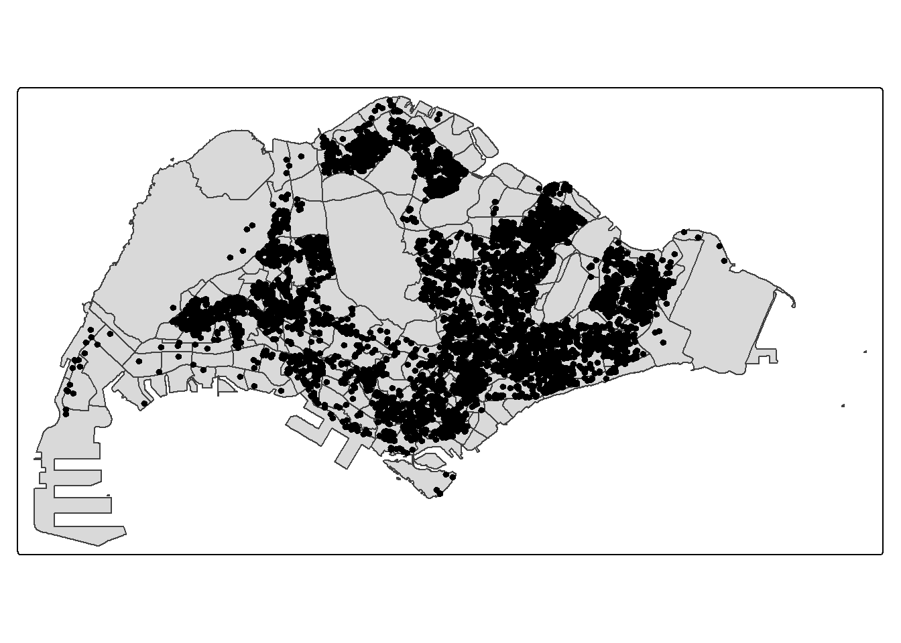
As we can see, for retail trade, majority of the points are concentrated in the Central and eastern Region. Retail store opened from the period of Jan 2024 to july 2025 mostly follow this pattern. This pattern highlights strong spatial clustering in central and eastern regions, particularly around dense residential estates and commercial hubs. The western and norther regions have fewer retail store registrations.A clear urban-core effect is evident, with higher concentrations around town centers and major transport corridors.
Accommodation (551)
# --- Accommodation (551) ---
tm_shape(mpsz_cl) + tm_polygons() + tm_shape(biz551_sf) + tm_dots()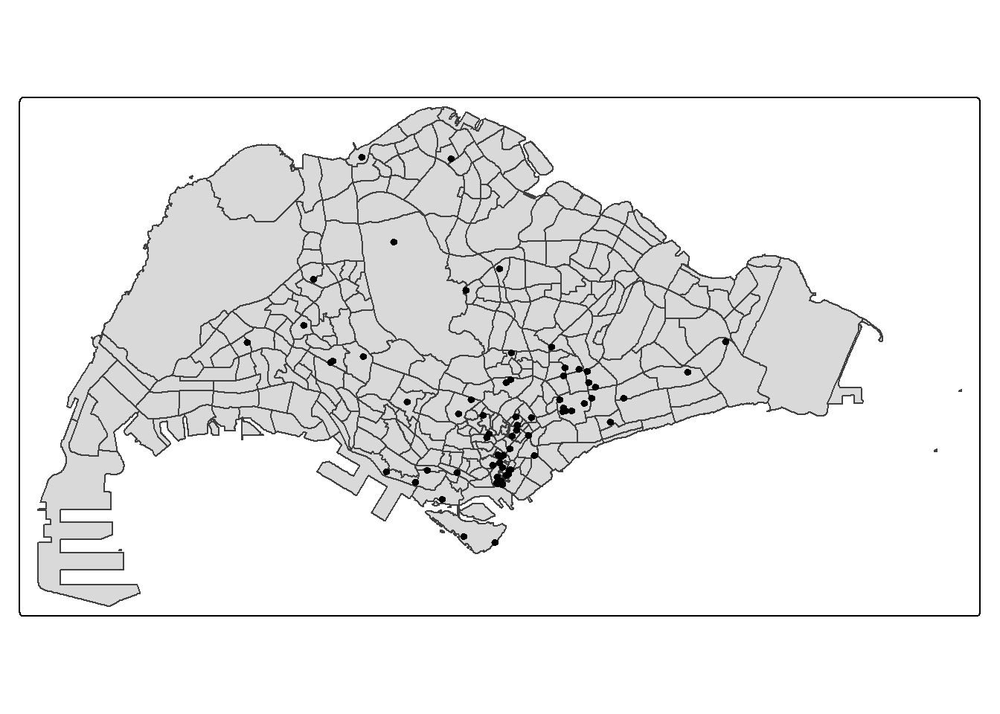
For the accomodation business, highly concentrated distribution of short-term accommodation businesses are seen within the central and downtown regions of Singapore, particularly in and around the Central Business District, Orchard, and Marina Bay. These clusters correspond with established tourist zones and areas of high visitor traffic. Peripheral residential areas, especially in the north, west, and far east, show very limited activity, reflecting stricter land use and lower tourist demand.
Amusement & Recreation (932)
# --- Amusement & Recreation (932) ---
tm_shape(mpsz_cl) + tm_polygons() + tm_shape(biz932_sf) + tm_dots()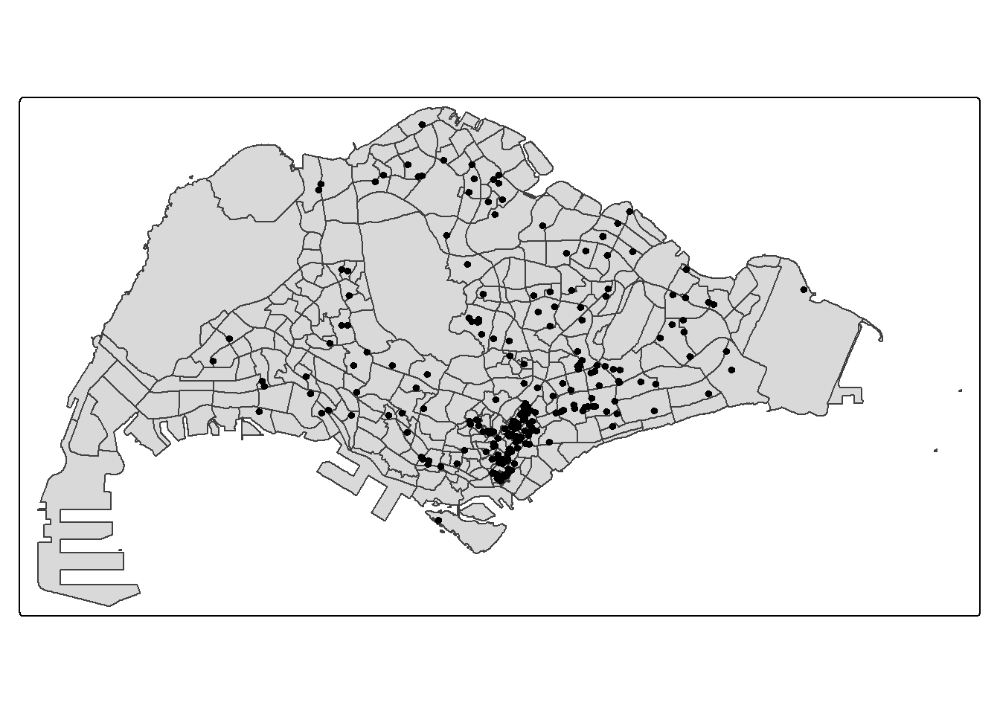
The map reveals a strong clustering of attractions in the central and southern regions—particularly the downtown core, Marina Bay, and Sentosa—while attractions are more dispersed in the northern and peripheral areas. This pattern highlights the central city’s role as the main tourism hub
Sub-zone: Central Region
Since majority of the points are concentrated in the Central Region, we can zoom into that area for better visualization.
# Zoom into Central Region
# filter central region
centralarea <- mpsz_cl %>%
filter(REGION_N == "CENTRAL REGION")Retail Trade (47) Central
We align biz47_sf to the CRS of centralarea, intersect to keep only retail points within the Central Region, and visualize them as red dots on the map.
# --- Retail Trade (47) ---
# make sure CRS matches
biz47_sf <- st_transform(biz47_sf, st_crs(centralarea))
biz47_sf_in <- st_intersection(biz47_sf, centralarea)
tm_shape(centralarea) + tm_polygons() + tm_shape(biz47_sf_in) + tm_dots()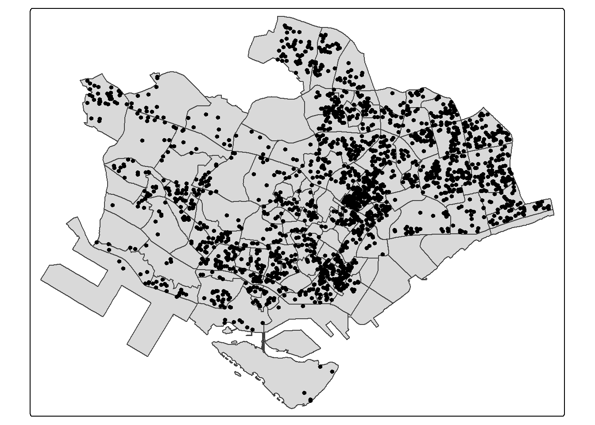
The zoomed-in geovisualisation highlights dense clustering of newly registered retail businesses in central Singapore. Strong concentrations are visible around Orchard, Bugis, Chinatown, and Marina Bay, reflecting the dominance of established shopping belts and tourist hubs. Significant activity is also observed near transport nodes such as MRT interchanges, where high pedestrian flows drive retail demand. Compared to the broader national distribution, the central region shows the highest intensity of openings within this period, reinforcing its role as Singapore’s retail core. The statistical graphics indicate consistent growth through early 2025, suggesting resilient consumer demand despite wider economic fluctuations. The spatial pattern demonstrates how retail expansion continues to align with commercial zones and visitor-heavy districts rather than dispersing evenly into surrounding residential estates.
Accommodation (551) Central
We align biz551_sf to the CRS of centralarea, intersect to keep only short-term accommodation points within the Central Region, and visualize them as red dots on the map.
# --- Accommodation (551) ---
# make sure CRS matches
biz551_sf <- st_transform(biz551_sf, st_crs(centralarea))
biz551_sf_in <- st_intersection(biz551_sf, centralarea)
tm_shape(centralarea) + tm_polygons() + tm_shape(biz551_sf_in) + tm_dots()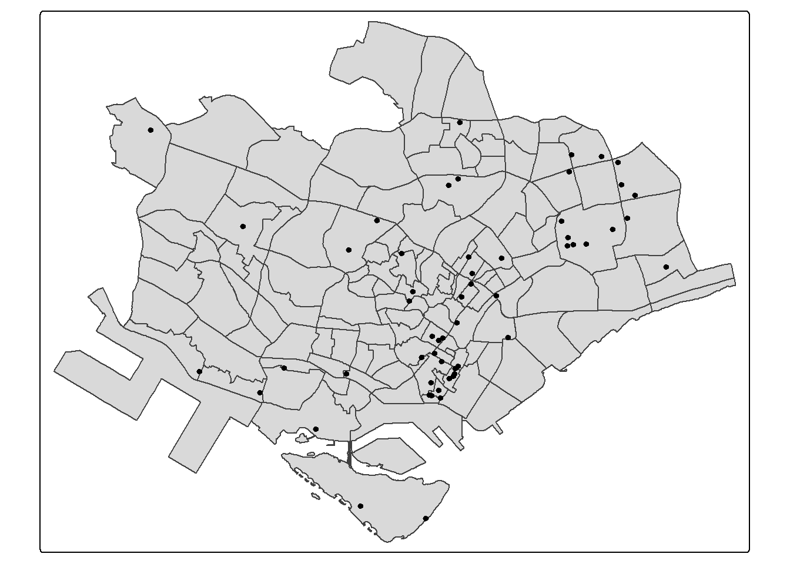
Amusement & Recreation (932)
We align biz932_sf to the CRS of centralarea, intersect to keep only other amusement and recreation points within the Central Region, and visualize them as dots on the map.
# --- Amusement & Recreation (932) ---
# make sure CRS matches
biz932_sf <- st_transform(biz932_sf, st_crs(centralarea))
biz932_sf_in <- st_intersection(biz932_sf, centralarea)
tm_shape(centralarea) + tm_polygons() + tm_shape(biz932_sf_in) + tm_dots()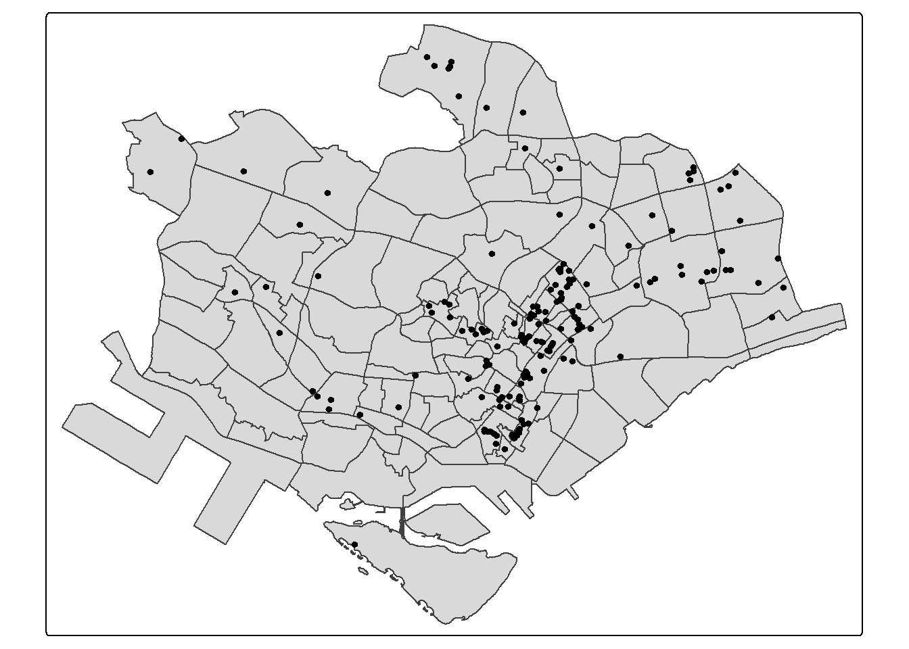
From the visualizations, we can see that the points are concentrated in the Central Region, particularly in areas such as Orchard, Marina Bay, and Bugis. This indicates that these areas are popular for retail trade, accommodation, and amusement & recreation activities. The spatial distribution of these business activities can provide insights into consumer behavior and preferences in Singapore.
5. Kernel Density Estimation
Convert central area to owin (observation window) to define the study area and transform the business location datasets into point pattern objects (ppp), preparing them for spatial analysis.
centralarea <- as.owin(centralarea)
biz47_ppp <- as.ppp(st_coordinates(biz47_sf_in), W = centralarea)
biz551_ppp <- as.ppp(st_coordinates(biz551_sf_in), W = centralarea)
biz932_ppp <- as.ppp(st_coordinates(biz932_sf_in), W = centralarea)Kernel density
We estimate spatial intensity for each business type using kernel density estimation. For biz47, biz551, and biz932, we first calculate the optimal bandwidth with bw.diggle(). We then apply density() with a Gaussian kernel, edge correction, and the chosen bandwidth to produce smooth density surfaces that highlight concentration patterns within the Central Region.
# --- biz47 ---
bw_diggle_47 <- bw.diggle(biz47_ppp)
kde_biz47 <- density(
biz47_ppp,
sigma = bw_diggle_47,
edge = TRUE,
kernel = "gaussian"
)
# --- biz551 ---
bw_diggle_551 <- bw.diggle(biz551_ppp)
kde_biz551 <- density(
biz551_ppp,
sigma = bw_diggle_551,
edge = TRUE,
kernel = "gaussian"
)
# --- biz932 ---
bw_diggle_932 <- bw.diggle(biz932_ppp)
kde_biz932 <- density(
biz932_ppp,
sigma = bw_diggle_932,
edge = TRUE,
kernel = "gaussian"
)KDE for Retail (47)
We generate a kernel density estimate for retail trade (biz47) using a fixed bandwidth of 1000. The density() function applies a Gaussian kernel with edge correction to smooth the spatial distribution of points. Finally, plot(kde_biz47) visualizes the intensity surface, showing areas where retail businesses are more concentrated within the Central Region.
kde_biz47 <- density(
biz47_ppp,
sigma=1000,
edge=TRUE,
kernel="gaussian"
)
plot(kde_biz47)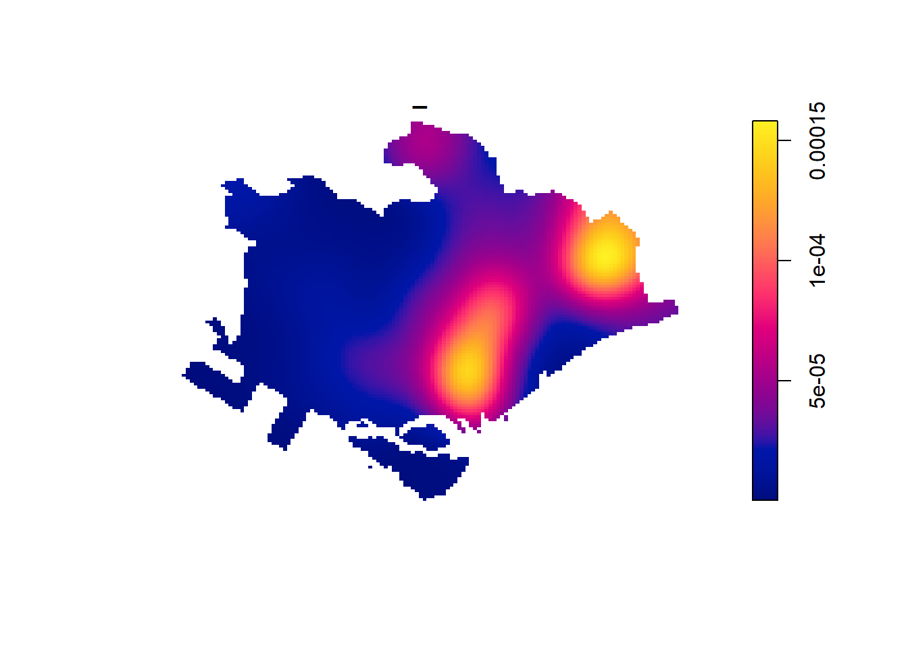
The KDE shows 2 high density clusters (bright yellow spots) which is consistent with singapore’s commercial hub, Orchard and downtown are where retail density is the hightest.
KDE for Accommodation (551)
We generate kernel density estimates for biz551
kde_biz551 <- density(
biz551_ppp,
sigma = 1000,
edge = TRUE,
kernel = "gaussian"
)
plot(kde_biz551)
mtext("KDE - Accommodation (551)", side = 3, line = 1.5, cex = 1.5, font = 2)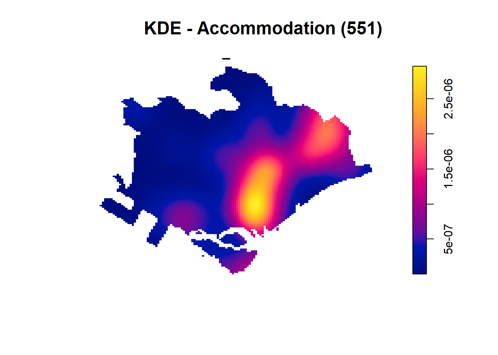
The KDE of newly opened hotels in Singapore’s central region shows the highest concentration in the Downtown Core, Orchard, and Marina Bay areas, highlighting the continued demand for accommodations near business and tourist hubs.
A secondary cluster emerges in Bugis, Little India, and Geylang, reflecting growth in budget and boutique hotels serving diverse visitors. Other regions remain low in density, indicating that new hotel developments are still highly centralized, reinforcing Singapore’s strategy of anchoring hospitality around its cultural and commercial heart.
KDE - Amusement & Recreation (932)
We generate kernel density estimates for biz932
kde_biz932 <- density(
biz932_ppp,
sigma = 1000,
edge = TRUE,
kernel = "gaussian"
)
plot(kde_biz932)
mtext("KDE - Amusement & Recreation (932)", side = 3, line = 1.5, cex = 1.5, font = 2)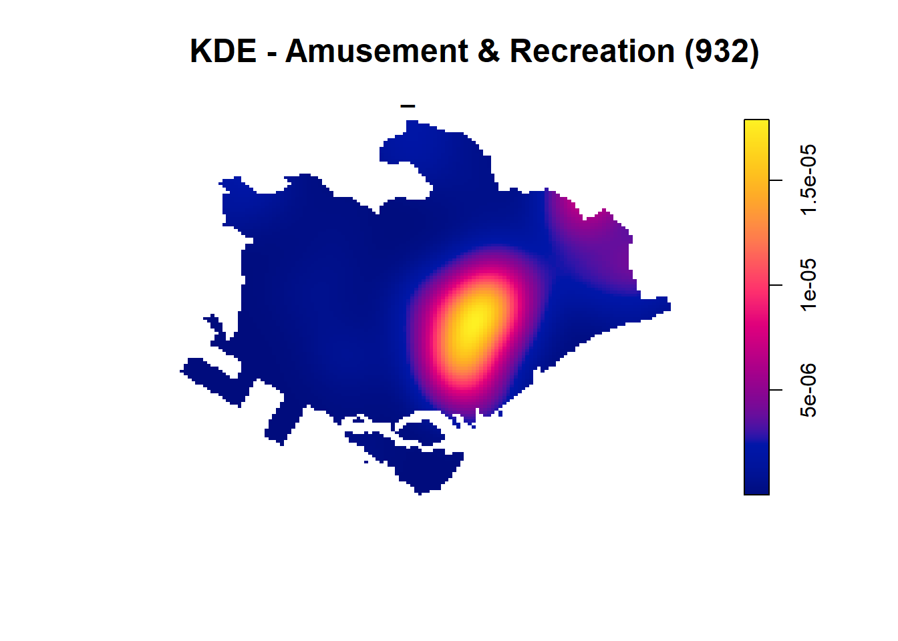
The KDE for attractions in Singapore’s central region shows a dominant hotspot in the Downtown Core and Marina Bay area, where most iconic landmarks and tourist destinations are located. A smaller density cluster appears toward the eastern side, likely reflecting attractions in areas such as Geylang or Katong. The rest of the region remains relatively sparse, indicating that attractions are highly concentrated around the city center.
Spatio-Temporal Kernel Density Estimation
We check how many businesses were registered each month and their locations.
Retail Trade (47)
We build a monthly index for the retail points, then keep only that index with geometry. We convert the data to a ppp point pattern, clip it to the Central Region window, and check basic summaries (including duplicates). We plot the Central-Region‐only point pattern to visualize the pattern with month number dimension
# 1) Build ordered month index (numeric) + nice label
biz47_sf_in <- biz47_sf_in %>%
mutate(
YearMonthDate = floor_date(uen_issue_date, "month"),
YearMonthLab = format(YearMonthDate, "%Y-%m"),
Month_idx = as.integer(factor(YearMonthDate,
levels = sort(unique(YearMonthDate))))
)
# 2) Keep only Month_idx + geometry
biz47_month <- biz47_sf_in %>%
select(Month_idx)
# 3) Convert to ppp
biz47_month_ppp <- as.ppp(biz47_month)
summary(biz47_month_ppp)Marked planar point pattern: 4677 points
Average intensity 2.005913e-05 points per square unit
*Pattern contains duplicated points*
Coordinates are given to 11 decimal places
marks are numeric, of type 'integer'
Summary:
Min. 1st Qu. Median Mean 3rd Qu. Max.
1.000 5.000 10.000 9.654 14.000 19.000
Window: rectangle = [20462.47, 37394.64] x [24787.05, 38557.33] units
(16930 x 13770 units)
Window area = 233161000 square unitsany(duplicated(biz47_month_ppp))[1] TRUE# 4) Clip to Central Region only
central_owin <- as.owin(centralarea)
biz47_month_central <- biz47_month_ppp[central_owin]
summary(biz47_month_central)Marked planar point pattern: 4677 points
Average intensity 3.485429e-05 points per square unit
*Pattern contains duplicated points*
Coordinates are given to 11 decimal places
marks are numeric, of type 'integer'
Summary:
Min. 1st Qu. Median Mean 3rd Qu. Max.
1.000 5.000 10.000 9.654 14.000 19.000
Window: polygonal boundary
16 separate polygons (8 holes)
vertices area relative.area
polygon 1 (hole) 395 -7.38124e+03 -5.50e-05
polygon 2 40 1.38607e+04 1.03e-04
polygon 3 (hole) 11 -8.36705e+01 -6.24e-07
polygon 4 (hole) 3 -2.33435e-03 -1.74e-11
polygon 5 45 2.51218e+03 1.87e-05
polygon 6 139 3.22293e+03 2.40e-05
polygon 7 148 3.10395e+03 2.31e-05
polygon 8 (hole) 4 -1.72650e-04 -1.29e-12
polygon 9 75 1.73526e+04 1.29e-04
polygon 10 83 5.28920e+03 3.94e-05
polygon 11 106 3.04104e+03 2.27e-05
polygon 12 (hole) 3 -1.37223e-02 -1.02e-10
polygon 13 (hole) 6 -8.37554e-01 -6.24e-09
polygon 14 (hole) 5 -2.92235e-04 -2.18e-12
polygon 15 4427 1.34146e+08 1.00e+00
polygon 16 (hole) 3 -7.43616e-06 -5.54e-14
enclosing rectangle: [18752.4, 37592.2] x [24495.28, 38891.37] units
(18840 x 14400 units)
Window area = 134187000 square units
Fraction of frame area: 0.495# 5) Plot
plot(biz47_month_central)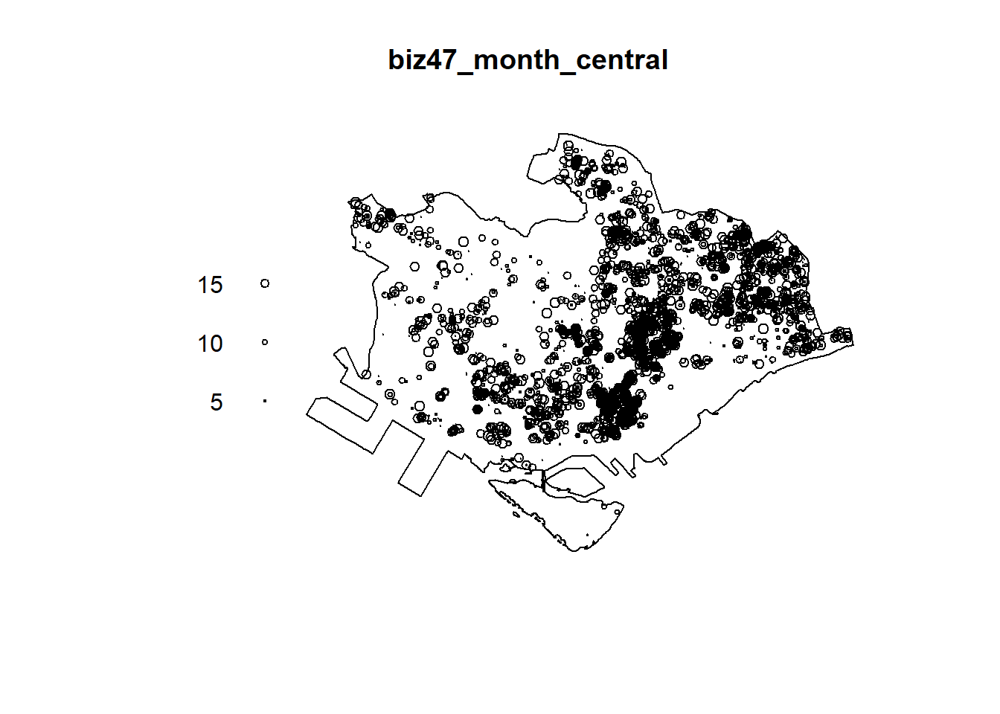
The diagram illustrates the monthly distribution of newly established retail businesses (biz47) within the Central Region. Each point represents a business, with its month of registration shown by the numeric index on the side. The dense clustering of points across the core area indicates a strong spatial concentration of retail activity, where new establishments repeatedly emerge in already active zones. The spread of month indices shows that growth occurs consistently over time, yet the spatial footprint remains focused, suggesting that businesses tend to favor established commercial clusters rather than expanding evenly across the region. This reflects a pattern of reinforcing central retail hubs through time.
We run spattemp.density() on the retail data to estimate spatio-temporal intensity, then use summary() to review key details of the density surface.
biz47_stkde <- spattemp.density(biz47_month_central)
summary(biz47_stkde)Spatiotemporal Kernel Density Estimate
Bandwidths
h = 755.3041 (spatial)
lambda = 0.0448 (temporal)
No. of observations
4677
Spatial bound
Type: polygonal
2D enclosure: [18752.4, 37592.2] x [24495.28, 38891.37]
Temporal bound
[1, 19]
Evaluation
128 x 128 x 19 trivariate lattice
Density range: [1.399585e-119, 4.727717e-08]We loop through each month index to plot the spatio-temporal kernel density estimates sequentially using the month ids we created earlier.
# 6) Plot all months sequentially, full size, with proper YYYY-MM labels
# Build a lookup from index -> label
idx_levels <- sort(unique(biz47_sf_in$Month_idx))
lab_lookup <- biz47_sf_in %>%
distinct(Month_idx, YearMonthLab) %>%
arrange(Month_idx)
for (i in idx_levels) {
plot(
biz47_stkde, i,
override.par = FALSE,
fix.range = TRUE,
main = "" # leave blank, we'll add with mtext
)
mtext(
paste0("ST-KDE – biz47 (", lab_lookup$YearMonthLab[lab_lookup$Month_idx == i], ")"),
side = 3, # top
line = 1.5, # distance from plot (lower = closer)
cex = 1.5, # font size
font = 2 # bold
)
}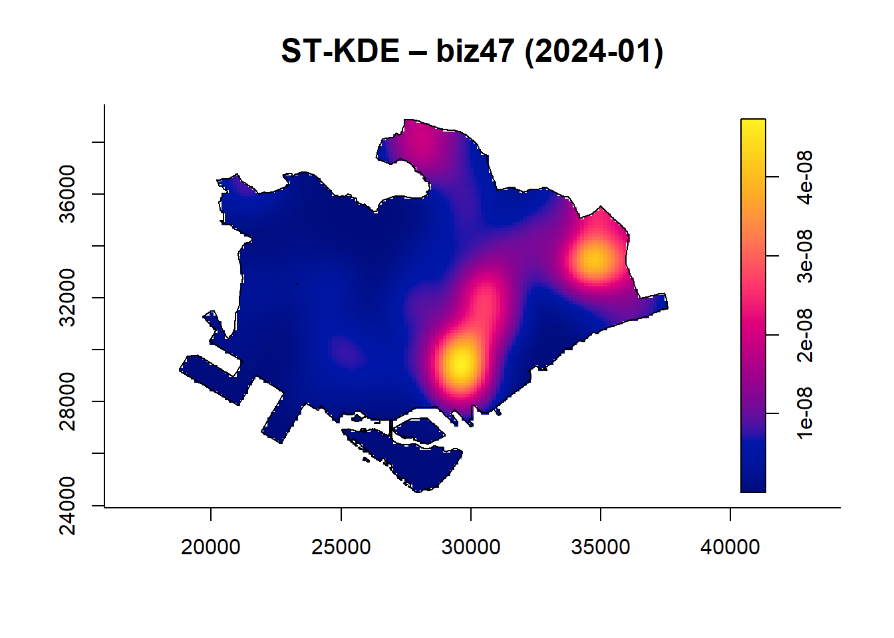
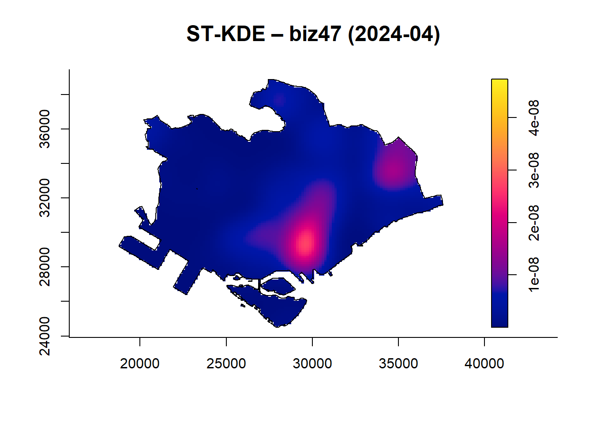
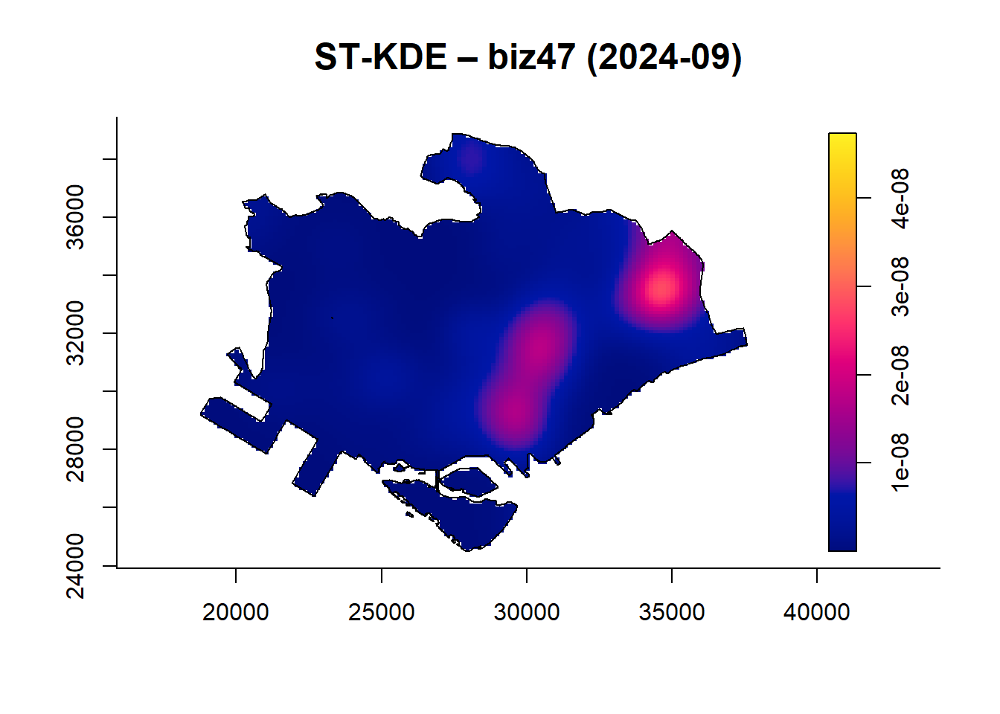
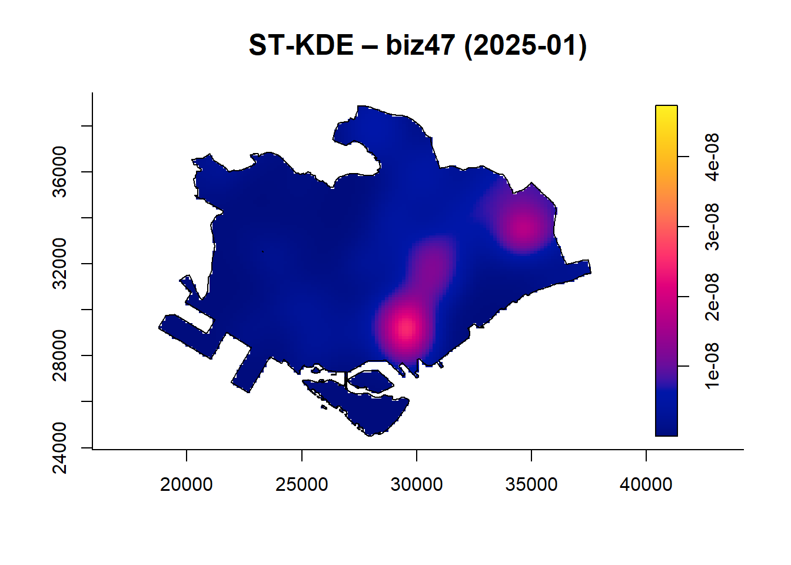
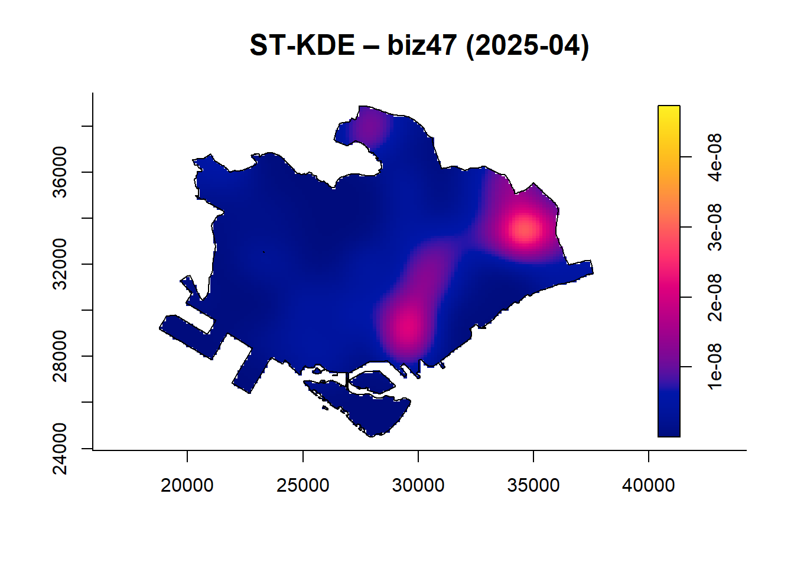
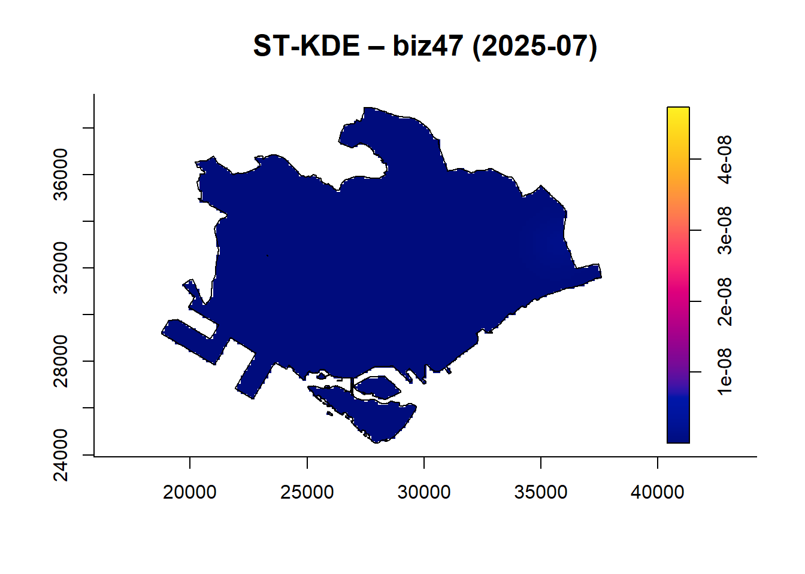
The spatio temporal KDE shows that over the months, the number of new retail businesses dropped over the months form Jan 2024. In Jan 2024 there were strong hotspots in retail businesses opening in the downtown region and the eastern part of the central region (Kallang / Geylang / Paya Lebar area). The hotspots remained. however their strength diminished over the months. This indicates that lesser retails were being opened throught the months
Short-Term Accomodation (551)
Similar to the previous business type, we build a monthly index for the accommodation points, keep only that index with the geometry, and convert the data into a ppp point pattern. We then clip it to the Central Region window, check basic summaries (including duplicates), and plot the Central-Region point pattern to visualize the spatial distribution across the month-index dimension.
# 1) Build ordered month index (numeric) + nice label
biz551_sf_in <- biz551_sf_in %>%
mutate(
YearMonthDate = floor_date(uen_issue_date, "month"),
YearMonthLab = format(YearMonthDate, "%Y-%m"),
Month_idx = as.integer(factor(YearMonthDate,
levels = sort(unique(YearMonthDate))))
)
# 2) Keep only Month_idx + geometry
biz551_month <- biz551_sf_in %>%
select(Month_idx)
# 3) Convert to ppp
biz551_month_ppp <- as.ppp(biz551_month)
summary(biz551_month_ppp)Marked planar point pattern: 79 points
Average intensity 5.065525e-07 points per square unit
*Pattern contains duplicated points*
Coordinates are given to 10 decimal places
marks are numeric, of type 'integer'
Summary:
Min. 1st Qu. Median Mean 3rd Qu. Max.
1.000 5.000 9.000 8.861 13.000 17.000
Window: rectangle = [21422.48, 35668.47] x [25152.64, 36100.02] units
(14250 x 10950 units)
Window area = 155956000 square unitsany(duplicated(biz551_month_ppp))[1] TRUE# 4) Clip to Central Region only
central_owin <- as.owin(centralarea)
biz551_month_central <- biz551_month_ppp[central_owin]
summary(biz551_month_central)Marked planar point pattern: 79 points
Average intensity 5.887297e-07 points per square unit
*Pattern contains duplicated points*
Coordinates are given to 10 decimal places
marks are numeric, of type 'integer'
Summary:
Min. 1st Qu. Median Mean 3rd Qu. Max.
1.000 5.000 9.000 8.861 13.000 17.000
Window: polygonal boundary
16 separate polygons (8 holes)
vertices area relative.area
polygon 1 (hole) 395 -7.38124e+03 -5.50e-05
polygon 2 40 1.38607e+04 1.03e-04
polygon 3 (hole) 11 -8.36705e+01 -6.24e-07
polygon 4 (hole) 3 -2.33435e-03 -1.74e-11
polygon 5 45 2.51218e+03 1.87e-05
polygon 6 139 3.22293e+03 2.40e-05
polygon 7 148 3.10395e+03 2.31e-05
polygon 8 (hole) 4 -1.72650e-04 -1.29e-12
polygon 9 75 1.73526e+04 1.29e-04
polygon 10 83 5.28920e+03 3.94e-05
polygon 11 106 3.04104e+03 2.27e-05
polygon 12 (hole) 3 -1.37223e-02 -1.02e-10
polygon 13 (hole) 6 -8.37554e-01 -6.24e-09
polygon 14 (hole) 5 -2.92235e-04 -2.18e-12
polygon 15 4427 1.34146e+08 1.00e+00
polygon 16 (hole) 3 -7.43616e-06 -5.54e-14
enclosing rectangle: [18752.4, 37592.2] x [24495.28, 38891.37] units
(18840 x 14400 units)
Window area = 134187000 square units
Fraction of frame area: 0.495# 5) Plot
plot(biz551_month_central)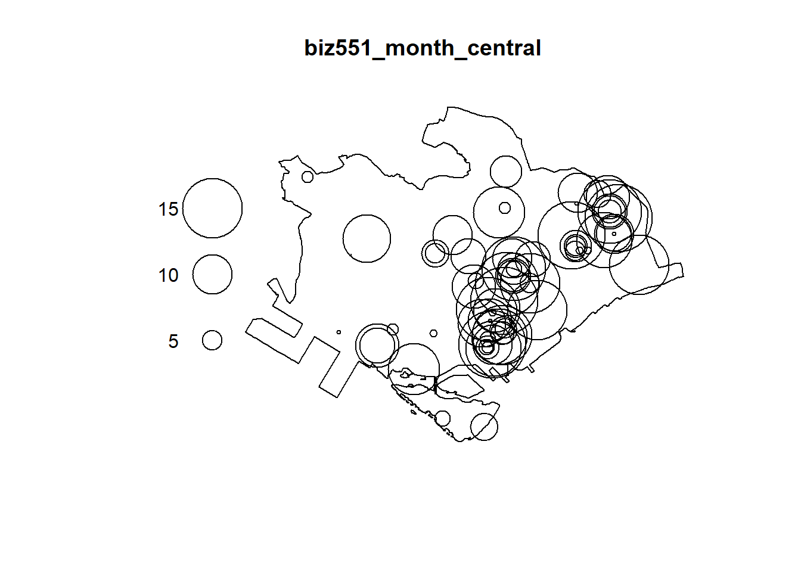
Larger circles represent more recent short term businesses that were opened. Smaller circles meant that the buisness was opened earlier in the period from Jan 2024 to Jul 2025. From this we can see that most of the businesses are concentrated near the central downtown region and slgthtly towards the east where there is another cluster at the Kallang / Geylang / Paya Lebar area.
We run spattemp.density() on the accomodation data to estimate spatio-temporal intensity, then use summary() to review key details of the density surface.
biz551_stkde <- spattemp.density(biz551_month_central)
summary(biz551_stkde)Spatiotemporal Kernel Density Estimate
Bandwidths
h = 1442.907 (spatial)
lambda = 1.6527 (temporal)
No. of observations
79
Spatial bound
Type: polygonal
2D enclosure: [18752.4, 37592.2] x [24495.28, 38891.37]
Temporal bound
[1, 17]
Evaluation
128 x 128 x 17 trivariate lattice
Density range: [3.164278e-15, 2.786142e-09]We loop through each month index to plot the spatio-temporal kernel density estimates sequentially using the month ids we created earlier.
# 6) Plot all months sequentially, full size, with proper YYYY-MM labels
# Build a lookup from index -> label
idx_levels <- sort(unique(biz551_sf_in$Month_idx))
lab_lookup <- biz551_sf_in %>%
distinct(Month_idx, YearMonthLab) %>%
arrange(Month_idx)
for (i in idx_levels) {
plot(
biz551_stkde, i,
override.par = FALSE,
fix.range = TRUE,
main = "" # leave empty
)
mtext(
paste0("ST-KDE – biz551 (", lab_lookup$YearMonthLab[lab_lookup$Month_idx == i], ")"),
side = 3, # top of plot
line = 1.5, # move closer/farther from plotting area
cex = 1.5, # font size
font = 2 # bold
)
}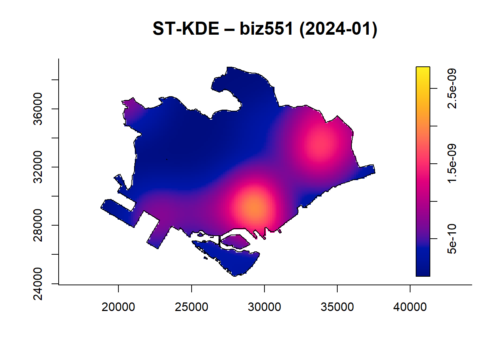
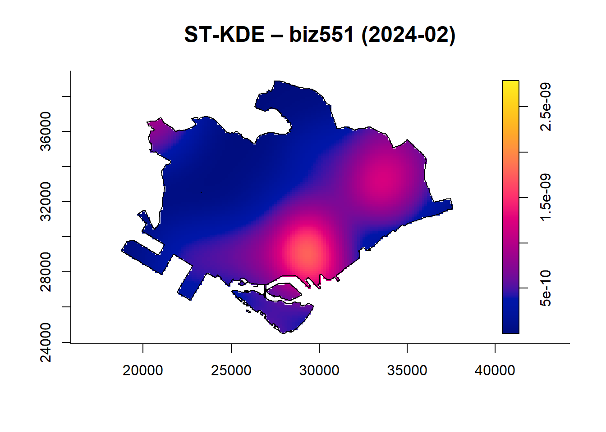
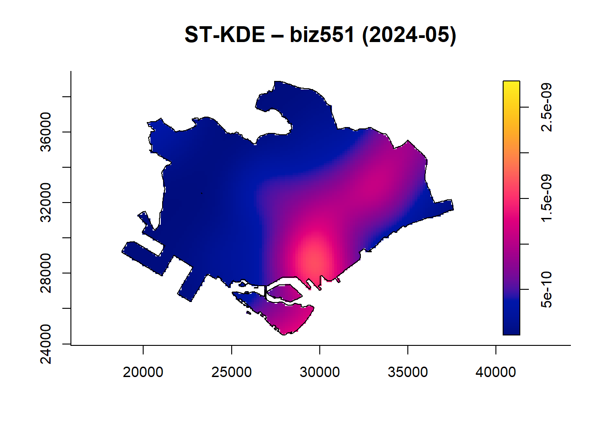
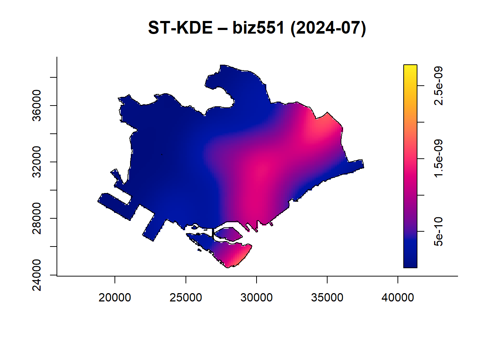
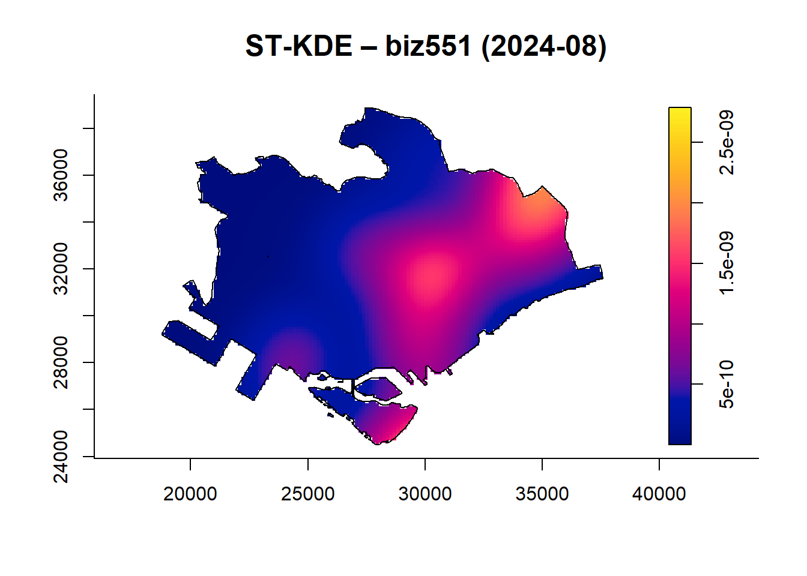
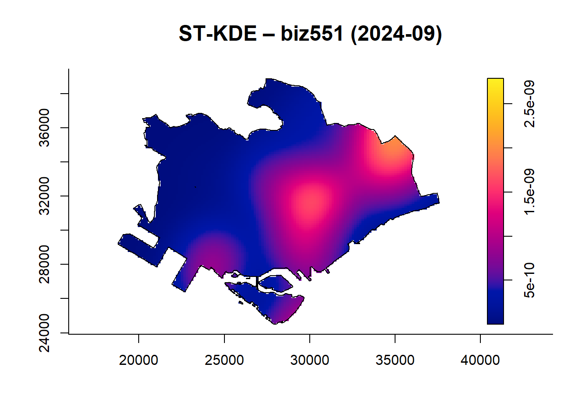
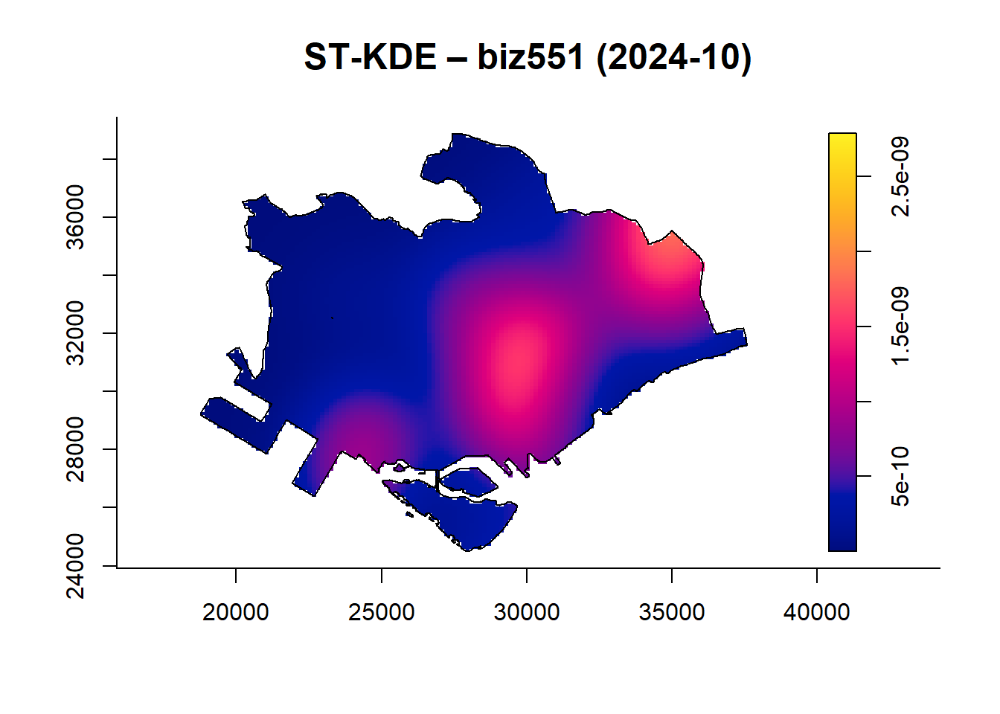
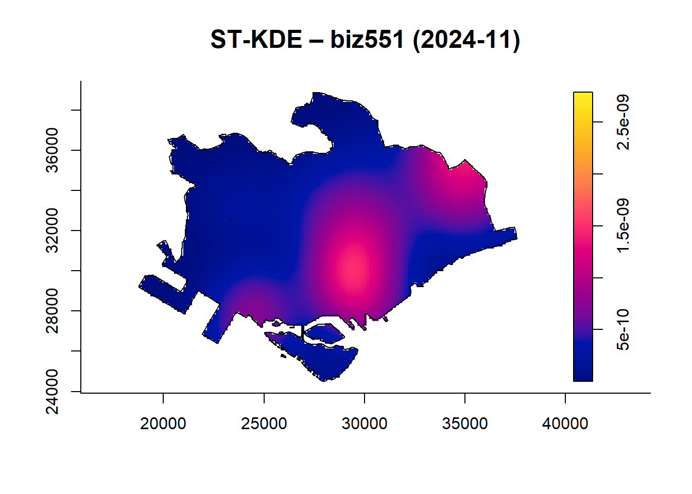
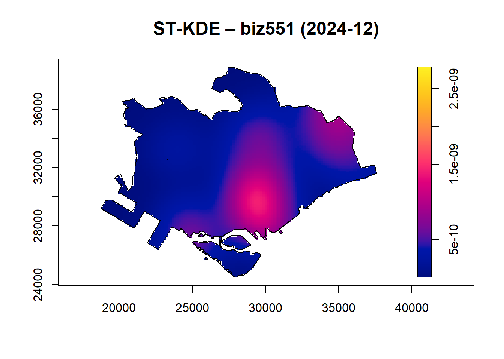
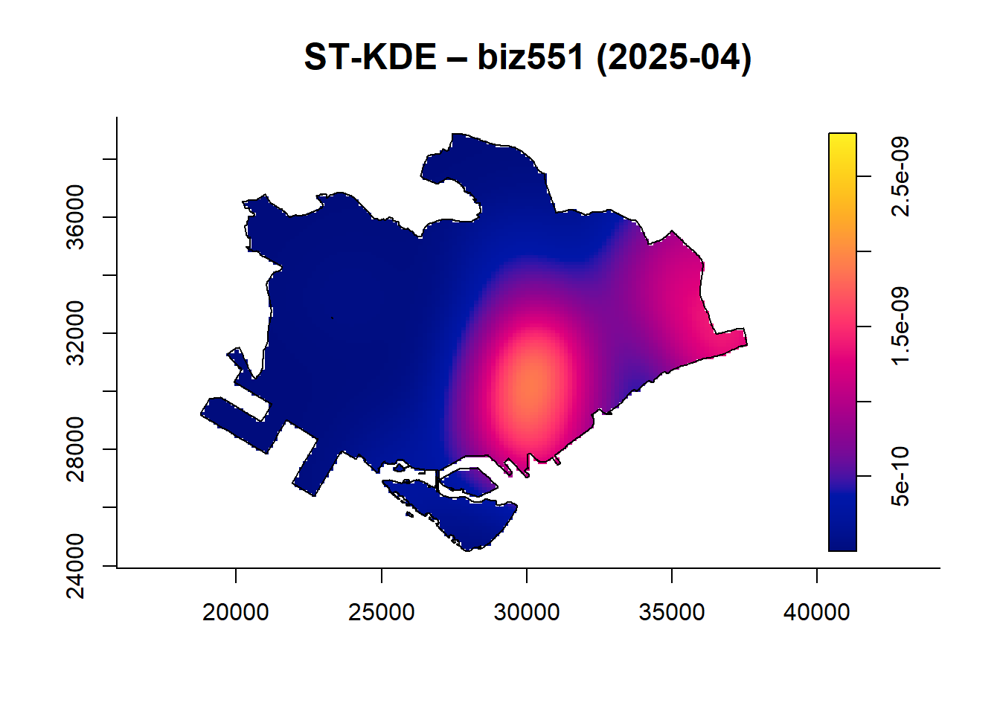
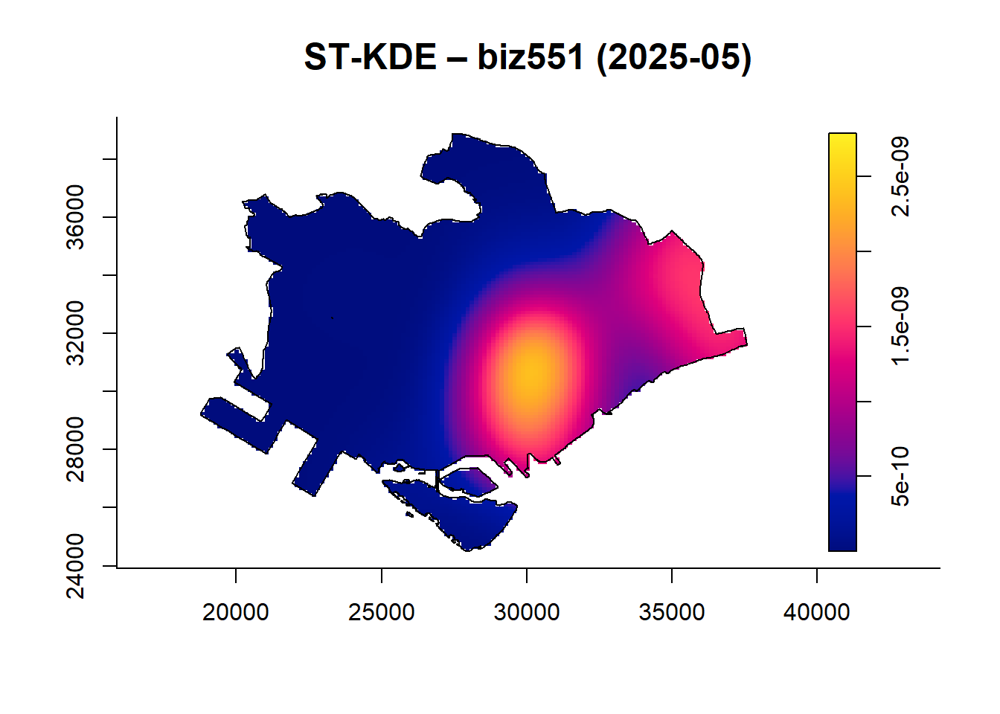
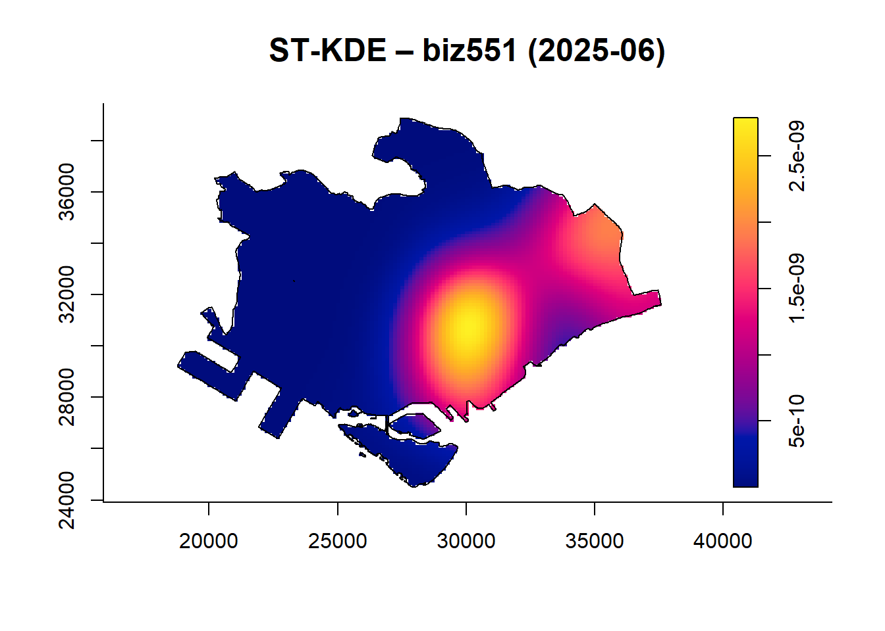
Over the months from Jan 2024 to July 2025, We can see consistently that short term accomodation businesses were being registered throughtout. Hotspots remain in the CBD. 2 consistent strong clusters are seen in the downtown area and the Payalebar area.
Over the months, the density of new busineses opened remained strong in the Downtow area at first. However, that pattern shifted through the months. with some months where the strongest hotspot was in the payalebar geylang region. There were also activity seen in sentosa in certain months.
Amusement & Recreation (932)
We build a monthly index for the recreation points, keep only that index with the geometry, and convert the data into a ppp point pattern. We then clip it to the Central Region window, check summaries (including duplicates), and plot the Central-Region point pattern to visualize the spatial distribution over the month-index dimension.
# 1) Build ordered month index (numeric) + nice label
biz932_sf_in <- biz932_sf_in %>%
mutate(
YearMonthDate = floor_date(uen_issue_date, "month"),
YearMonthLab = format(YearMonthDate, "%Y-%m"),
Month_idx = as.integer(factor(YearMonthDate,
levels = sort(unique(YearMonthDate))))
)
# 2) Keep only Month_idx + geometry
biz932_month <- biz932_sf_in %>%
select(Month_idx)
# 3) Convert to ppp
biz932_month_ppp <- as.ppp(biz932_month)
summary(biz932_month_ppp)Marked planar point pattern: 322 points
Average intensity 1.809911e-06 points per square unit
*Pattern contains duplicated points*
Coordinates are given to 10 decimal places
marks are numeric, of type 'integer'
Summary:
Min. 1st Qu. Median Mean 3rd Qu. Max.
1.000 4.000 8.000 8.516 13.000 18.000
Window: rectangle = [20874.33, 36074.21] x [26412.29, 38116.94] units
(15200 x 11700 units)
Window area = 177909000 square unitsany(duplicated(biz932_month_ppp))[1] TRUE# 4) Clip to Central Region only
central_owin <- as.owin(centralarea)
biz932_month_central <- biz932_month_ppp[central_owin]
summary(biz932_month_central)Marked planar point pattern: 322 points
Average intensity 2.399632e-06 points per square unit
*Pattern contains duplicated points*
Coordinates are given to 10 decimal places
marks are numeric, of type 'integer'
Summary:
Min. 1st Qu. Median Mean 3rd Qu. Max.
1.000 4.000 8.000 8.516 13.000 18.000
Window: polygonal boundary
16 separate polygons (8 holes)
vertices area relative.area
polygon 1 (hole) 395 -7.38124e+03 -5.50e-05
polygon 2 40 1.38607e+04 1.03e-04
polygon 3 (hole) 11 -8.36705e+01 -6.24e-07
polygon 4 (hole) 3 -2.33435e-03 -1.74e-11
polygon 5 45 2.51218e+03 1.87e-05
polygon 6 139 3.22293e+03 2.40e-05
polygon 7 148 3.10395e+03 2.31e-05
polygon 8 (hole) 4 -1.72650e-04 -1.29e-12
polygon 9 75 1.73526e+04 1.29e-04
polygon 10 83 5.28920e+03 3.94e-05
polygon 11 106 3.04104e+03 2.27e-05
polygon 12 (hole) 3 -1.37223e-02 -1.02e-10
polygon 13 (hole) 6 -8.37554e-01 -6.24e-09
polygon 14 (hole) 5 -2.92235e-04 -2.18e-12
polygon 15 4427 1.34146e+08 1.00e+00
polygon 16 (hole) 3 -7.43616e-06 -5.54e-14
enclosing rectangle: [18752.4, 37592.2] x [24495.28, 38891.37] units
(18840 x 14400 units)
Window area = 134187000 square units
Fraction of frame area: 0.495# 5) Plot
plot(biz932_month_central)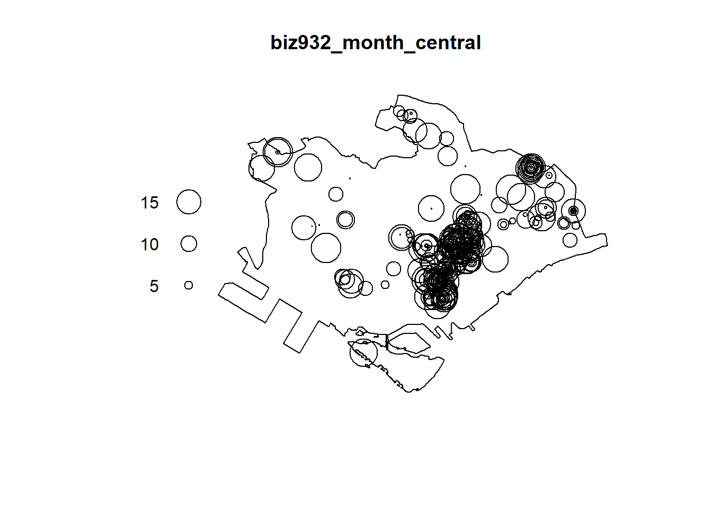
The diagram shows the spatial distributioon of attraction businesses opened in singapore. The circle size represent the month when the business was registered. The bigger the circle the more recent the registration. Overall, There is a very high density of attraction businesses registered in the Downtown Region. There were also a good number concentrated in the eastern part of the central region.
We run spatio-temporal kernel density estimation on the recreation data with spattemp.density(), then use summary() to inspect the resulting density surface and its key characteristics.
# Spatio-temporal KDE for attractions
biz932_stkde <- spattemp.density(biz932_month_central)
# Summarise results
summary(biz932_stkde)Spatiotemporal Kernel Density Estimate
Bandwidths
h = 641.6551 (spatial)
lambda = 0.9661 (temporal)
No. of observations
322
Spatial bound
Type: polygonal
2D enclosure: [18752.4, 37592.2] x [24495.28, 38891.37]
Temporal bound
[1, 18]
Evaluation
128 x 128 x 18 trivariate lattice
Density range: [2.323037e-29, 9.672972e-09]We loop through each month index to plot the spatio-temporal kernel density estimates for the recreation businesses. Each plot is labeled with its corresponding YYYY-MM, providing a month-by-month view of how business intensity changes within the Central Region.
# 6) Plot all months sequentially, full size, with proper YYYY-MM labels
# Build a lookup from index -> label
idx_levels <- sort(unique(biz932_sf_in$Month_idx))
lab_lookup <- biz932_sf_in %>%
distinct(Month_idx, YearMonthLab) %>%
arrange(Month_idx)
for (i in idx_levels) {
plot(
biz932_stkde, i,
override.par = FALSE,
fix.range = TRUE,
main = "" # leave blank, add with mtext
)
mtext(
paste0("ST-KDE – biz932 (",
lab_lookup$YearMonthLab[lab_lookup$Month_idx == i],
")"),
side = 3, # top of plot
line = 1.5, # adjust spacing from the plot
cex = 1.5, # enlarge text
font = 2 # bold
)
}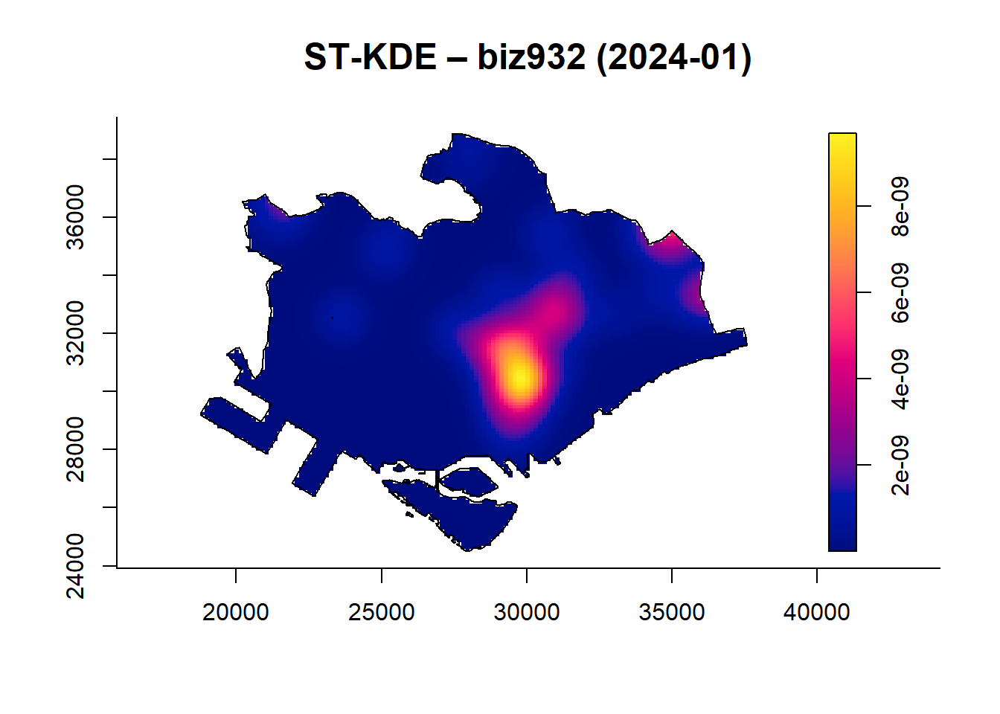
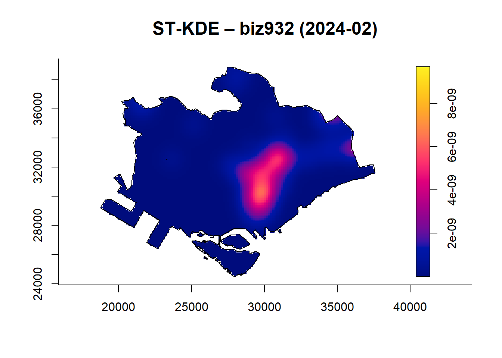
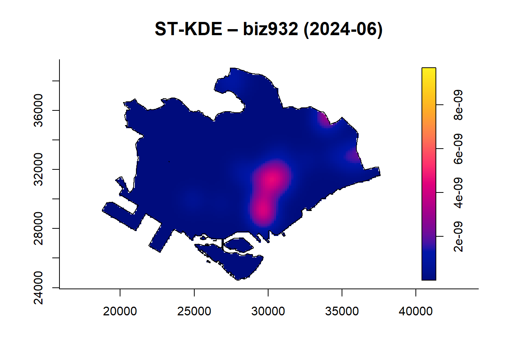
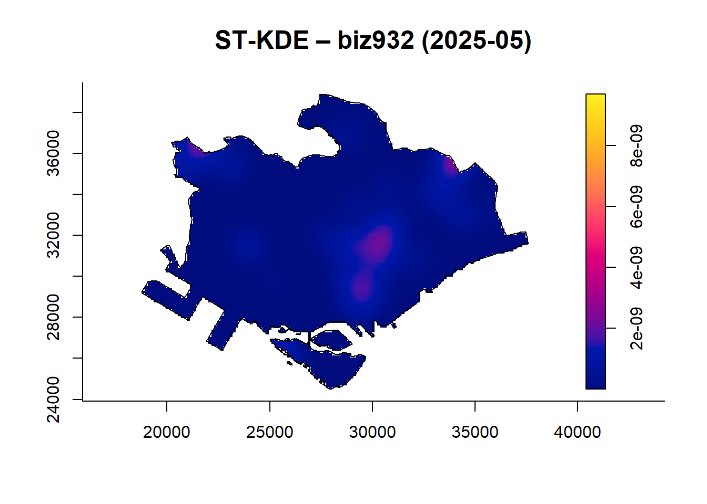
New attraction business activity registration was very strong in the first month of our date range, indicated by very bright hotspots in the Downtown area. That activity diminished over the months as indicated by less bright spots. This indicates that lesser number of attraction businesses are being registered over the months. In the final month, hotspots became very dim. New hotspots started appearing at other areas of the Central region.
6. Second-Order Spatial Analysis
6.1 Retail Businesses (47)
The F function is applied to retail businesses (47) to analyze spatial accessibility. It measures the distribution of distances from randomly chosen points within the study area (central region) to the nearest retail business. By using the F function, we can evaluate how accessible retail businesses are across the spatial plane.
F_biz47 = Fest(biz47_ppp)
plot(F_biz47, main = "F function - Retail Trade (47)")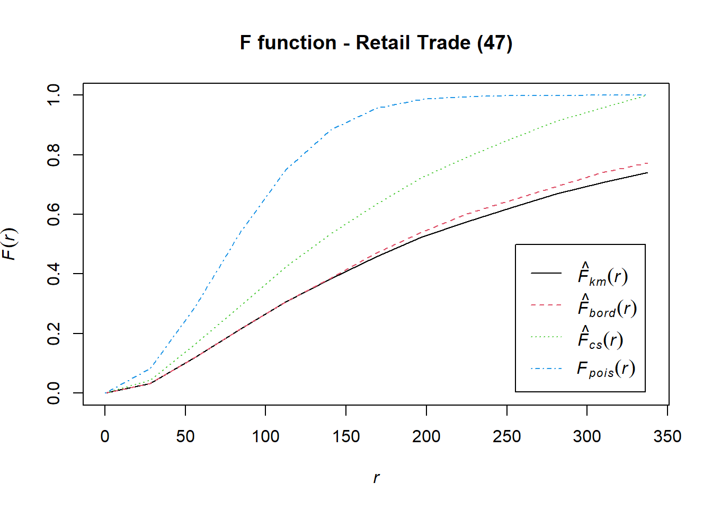
X-axis (r): Distance (in spatial units).
Y-axis (F(r)): Probability that the nearest retail business lies within distance r from a randomly chosen location in the study area.
Black (𝐹̂_Km(r)): Kaplan–Meier estimator (main estimate).
Red (𝐹̂_bord(r)): Border-corrected estimate.
Green (𝐹̂_cs(r)): Chiu–Stoyan correction.
Blue dashed (F_pois(r)): Benchmark under Complete Spatial Randomness (CSR)
The observed curves (black, red, green) lie below the CSR (blue dashed) across most distances. This means that the probability of finding a retail business close to a random location is lower than expected under randomness. Retail businesses are more dispersed. At shorter distances (r < ~50), the gap is noticeable: very few businesses are immediately close to a random location. At long distances (>250), the observed curves converge with CSR, meaning differences disappear at large scales. Retail businesses (47) are less accessible on average than expected under CSR. For consumers, this may imply greater travel distance to access retail services, reducing spatial accessibility compared to a purely random distribution.
Performing Complete Spatial Randomness Test
To confirm the observed spatial patterns above, a hypothesis test will be conducted. The hypothesis and test are as follows:
Ho = The distribution of retail shops in CBD are randomly distributed.
H1= The distribution of retail shops in CBD are not randomly distributed.
The null hypothesis will be rejected if p-value is smaller than alpha value of 0.001.
envelope_F_biz47 = envelope(biz47_ppp, Fest, nsim=99)Generating 99 simulations of CSR ...
1, 2, 3, 4, 5, 6, 7, 8, 9, 10, 11, 12, 13, 14, 15, 16, 17, 18, 19, 20,
21, 22, 23, 24, 25, 26, 27, 28, 29, 30, 31, 32, 33, 34, 35, 36, 37, 38, 39, 40,
41, 42, 43, 44, 45, 46, 47, 48, 49, 50, 51, 52, 53, 54, 55, 56, 57, 58, 59, 60,
61, 62, 63, 64, 65, 66, 67, 68, 69, 70, 71, 72, 73, 74, 75, 76, 77, 78, 79, 80,
81, 82, 83, 84, 85, 86, 87, 88, 89, 90, 91, 92, 93, 94, 95, 96, 97, 98,
99.
Done.plot(envelope_F_biz47, main = "F function - Retail Trade (47) with CSR envelope")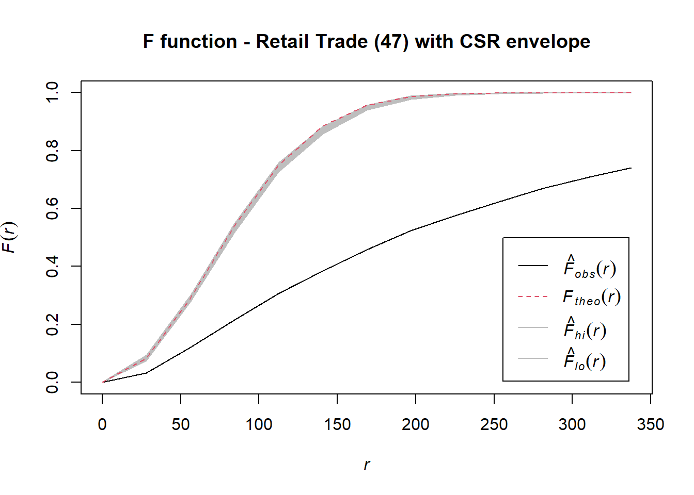
The grey band represents the CSR envelope, while the black line shows the observed distribution. The x-axis denotes distance and the y-axis the proportion of businesses within that distance. Since the observed curve consistently falls below the CSR band, it indicates that retail businesses are more regularly spaced and dispersed than would be expected under randomness.
6.2 Short-term Accomodations (551)
The K function is applied to short-term accommodations in the CBD to examine their spatial arrangement. By using this function, we can assess how closely these establishments are packed together and determine whether they exhibit clustering, randomness, or dispersion across the study area.
K_biz551 = Kest(biz551_ppp, correction = "Ripley")
plot(K_biz551, . -r ~ r, ylab= "K(d)-r", xlab = "d(m)")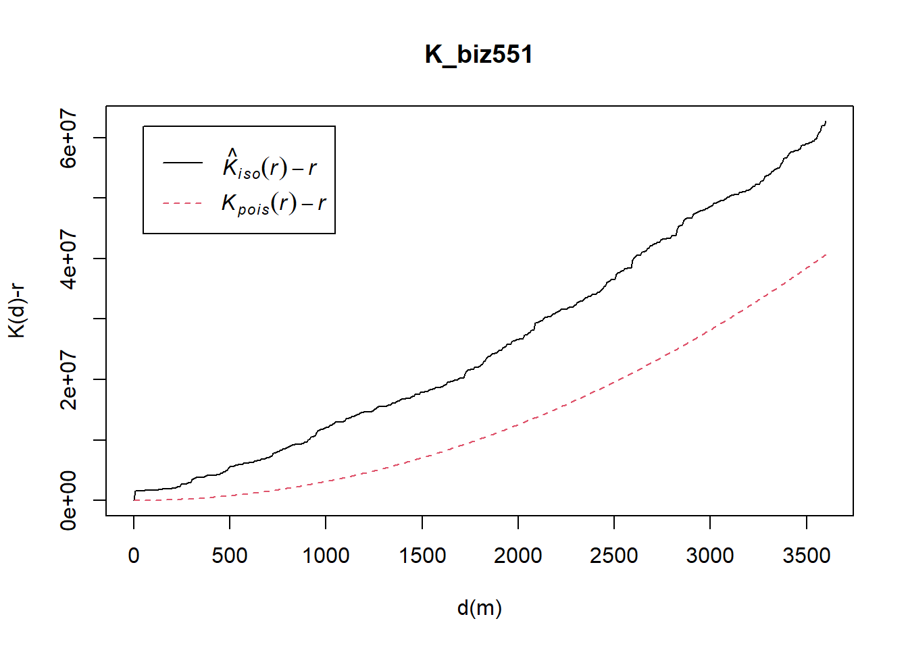
The K function plot for short-term accommodations (551) presents distance in meters on the x-axis (d) and the deviation from complete spatial randomness on the y-axis. The black line represents the observed distribution of short-term accommodations, while the red dashed line shows the expected distribution under CSR (Complete Spatial Randomness). Since the black line lies consistently above the red dashed line across all distances, it indicates that short-term accommodations are more clustered than would be expected under randomness. This clustering is evident at both small distances, where establishments are located close to one another, and at larger distances, where broader concentrations appear across the CBD.
Performing Complete Spatial Randomness Test
To confirm the observed spatial patterns above, a hypothesis test will be conducted. The hypotheses are as follows:
H₀: The distribution of short-term accommodations in the CBD is randomly distributed (follows CSR).
H₁: The distribution of short-term accommodations in the CBD is not randomly distributed (deviates from CSR).
The null hypothesis will be rejected if the p-value is smaller than the alpha value of 0.001.
envelope_K_biz551 <- envelope(biz551_ppp, Kest, nsim=99, rank = 1, glocal=TRUE)Generating 99 simulations of CSR ...
1, 2, 3, 4, 5, 6, 7, 8, 9, 10, 11, 12, 13, 14, 15, 16, 17, 18, 19, 20,
21, 22, 23, 24, 25, 26, 27, 28, 29, 30, 31, 32, 33, 34, 35, 36, 37, 38, 39, 40,
41, 42, 43, 44, 45, 46, 47, 48, 49, 50, 51, 52, 53, 54, 55, 56, 57, 58, 59, 60,
61, 62, 63, 64, 65, 66, 67, 68, 69, 70, 71, 72, 73, 74, 75, 76, 77, 78, 79, 80,
81, 82, 83, 84, 85, 86, 87, 88, 89, 90, 91, 92, 93, 94, 95, 96, 97, 98,
99.
Done.plot(envelope_K_biz551, main = "K function - Short Term Accomodation (551) with CSR envelope")The K function with CSR envelope for short-term accommodations (551) shows that the observed distribution (black line) lies consistently above both the theoretical CSR expectation (red dashed) and the simulation envelope (grey band). This indicates that short-term accommodations are significantly more clustered than would be expected under randomness. As the observed curve falls outside the CSR envelope, the null hypothesis of complete spatial randomness is rejected at α = 0.001, confirming that these businesses exhibit strong spatial clustering within the CBD.
6.3 Amusement & Recreation (932)
The L function, a variance-stabilized transformation of Ripley’s K function, is applied to amusement and recreation businesses in the CBD. We use this function to examine how closely packed these establishments are at different spatial scales. In the plot, the x-axis (d) represents distance in meters, while the y-axis (L(d) – r) shows deviations from complete spatial randomness (CSR). If the observed line lies above zero, it suggests clustering; if it lies below zero, it suggests dispersion or regular spacing; and values close to zero indicate a random distribution. This transformation makes deviations from CSR easier to detect and interpret compared to the raw K function.
L_biz932 = Lest(biz932_ppp, correction = "Ripley")
plot(L_biz932, . -r ~ r, ylab= "L(d)-r", xlab = "d(m)")The L function plot for Amusement & Recreation businesses (932) shows the spatial pattern of these establishments in the CBD. The x-axis (d) represents distance in meters, while the y-axis (L(d) – r) indicates deviations from complete spatial randomness (CSR). The black line represents the observed distribution, and the red dashed line shows the CSR expectation.
Here, the observed line lies consistently above zero and well above the CSR line across almost all distances. This indicates strong clustering of amusement and recreation businesses. The upward trend at smaller distances suggests that many of these businesses are located very close to each other, forming dense local clusters. The persistence of the curve above CSR at larger distances further implies clustering is not only local but also extends across wider areas of the CBD.
Performing Complete Spatial Randomness Test
To confirm the observed spatial patterns above, a hypothesis test will be conducted. The hypotheses are as follows:
H₀: The distribution of attractions in the central area is randomly distributed (follows CSR).
H₁: The distribution of attractions in the central area is not randomly distributed (deviates from CSR).
The null hypothesis will be rejected if the p-value is smaller than the alpha value of 0.001.
envelope_L_biz932 <- envelope(biz932_ppp, Lest, nsim=99, rank = 1, glocal=TRUE)Generating 99 simulations of CSR ...
1, 2, [6:31 remaining] 3,
[6:27 remaining] 4, [6:22 remaining] 5, [6:10 remaining] 6,
[6:18 remaining] 7, [6:16 remaining] 8, [5:59 remaining] 9,
[5:54 remaining] 10, [5:49 remaining] 11, [5:39 remaining] 12,
[5:32 remaining] 13, [5:25 remaining] 14, [5:26 remaining] 15,
[5:23 remaining] 16, [5:17 remaining] 17, [5:11 remaining] 18,
[5:04 remaining] 19, [5:02 remaining] 20, [4:57 remaining] 21,
[4:52 remaining] 22, [4:50 remaining] 23, [4:46 remaining] 24,
[4:44 remaining] 25, [4:38 remaining] 26, [4:34 remaining] 27,
[4:32 remaining] 28, [4:28 remaining] 29, [4:22 remaining] 30,
[4:20 remaining] 31, [4:15 remaining] 32, [4:11 remaining] 33,
[4:07 remaining] 34, [4:04 remaining] 35, [4:01 remaining] 36,
[3:58 remaining] 37, [3:55 remaining] 38, [3:52 remaining] 39,
[3:49 remaining] 40, [3:45 remaining] 41, [3:42 remaining] 42,
[3:38 remaining] 43, [3:34 remaining] 44, [3:31 remaining] 45,
[3:28 remaining] 46, [3:24 remaining] 47, [3:20 remaining] 48,
[3:16 remaining] 49, [3:12 remaining] 50, [3:08 remaining] 51,
[3:04 remaining] 52, [3:00 remaining] 53, [2:56 remaining] 54,
[2:52 remaining] 55, [2:50 remaining] 56, [2:46 remaining] 57,
[2:42 remaining] 58, [2:38 remaining] 59, [2:35 remaining] 60,
[2:31 remaining] 61, [2:27 remaining] 62, [2:24 remaining] 63,
[2:20 remaining] 64, [2:16 remaining] 65, [2:12 remaining] 66,
[2:08 remaining] 67, [2:04 remaining] 68, [2:00 remaining] 69,
[1:57 remaining] 70, [1:53 remaining] 71, [1:49 remaining] 72,
[1:45 remaining] 73, [1:41 remaining] 74, [1:37 remaining] 75,
[1:34 remaining] 76, [1:30 remaining] 77, [1:26 remaining] 78,
[1:22 remaining] 79, [1:18 remaining] 80, [1:14 remaining] 81,
[1:10 remaining] 82, [1:06 remaining] 83, [1:02 remaining] 84,
[59 sec remaining] 85, [55 sec remaining] 86, [51 sec remaining] 87,
[47 sec remaining] 88, [43 sec remaining] 89, [39 sec remaining] 90,
[35 sec remaining] 91, [31 sec remaining] 92, [28 sec remaining] 93,
[24 sec remaining] 94, [20 sec remaining] 95, [16 sec remaining] 96,
[12 sec remaining] 97, [8 sec remaining] 98, [4 sec remaining]
99.
Done.plot(envelope_L_biz932, main = "L function - Amusement & Recreation (932) with CSR envelope")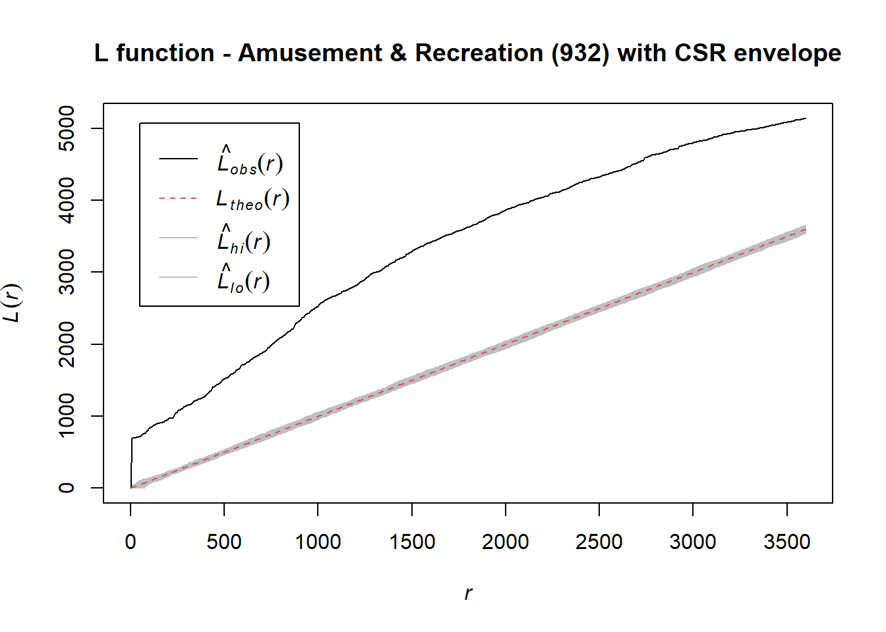
The L function with CSR envelope for amusement and recreation businesses (932) shows that the observed distribution (black line) lies consistently above both the theoretical CSR expectation (red dashed line) and the simulation envelope (grey band). This indicates that the number of businesses found within a given distance is much higher than would be expected under randomness. As the observed curve clearly falls outside the CSR envelope, the null hypothesis of complete spatial randomness is rejected at α = 0.001. Therefore, these businesses exhibit strong and significant clustering across the CBD, reflecting a clear spatial concentration rather than a random distribution.
Overall Analysis
How these findings can be used to support urban land use planning and management
The spatial analysis shows retail businesses concentrated in Orchard, Bugis, Chinatown, and Marina Bay, with additional activity around MRT nodes. This reflects strong demand in established shopping belts and tourist corridors. For land use planning, this suggests that:
Zoning should continue to safeguard central retail corridors while preventing over-saturation that could displace complementary uses like attractions
Decentralization strategies can be pursued by incentivizing retail in underserved western and northern subzones. This improves spatial equity and reduces transport pressure on the central region.
Transit-oriented development (TOD) policies can be aligned with retail growth, ensuring malls and mixed-use centres are integrated with MRT interchanges to maximize accessibility.
KDE and spatio-temporal analysis highlight persistent and strong hotspots in the CBD, Orchard, and Marina Bay, with some secondary clusters in Paya Lebar and Geylang area. This pattern has implications for planning and management:
Tourism zoning: Key tourist districts should continue to accommodate hotels, but planning controls like licensing limits and building quotas are needed to manage saturation and protect residential quality of life.
Supporting infrastructure: Clustering increases demand for transport, public realm, and utilities. Investment in walkability, traffic management, and service delivery ensures that high-density short term accommodation remains sustainable.
Diversification: Encouraging boutique hotels or homestay models in secondary hotspots like Paya Lebar and Sentosa can spread tourism benefits more evenly while reducing reliance on the downtown core.
Attractions are clustered in the Downtown Core and Marina Bay, with some presence in eastern subzones like Geylang and Sentosa. Over time, the density of new establishments decreased, but clustering remained. Planning implications include:
- Cluster management: High concentration of attractions boosts tourism appeal but risks congestion and strain on transport and public spaces. Urban planning could include decentralization of Attractions by incentivising development of secondary clusters in less visited areas. Visitor flow can be managed by encouraging off-peak tourism with dynamic pricing.